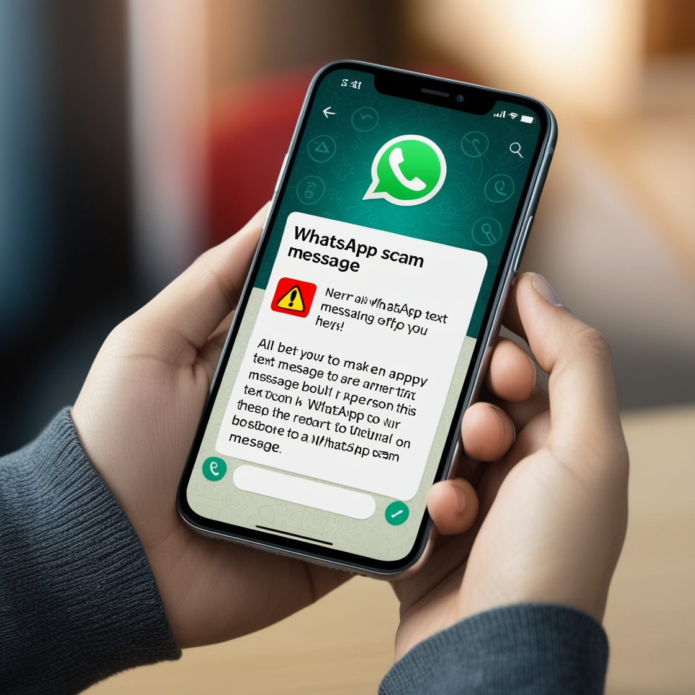

1 באוגוסט, 2024
לפעמים, הרגעים הכי פשוטים בחיינו יכולים להפוך לשיעור חשוב בביטחון דיגיטלי. זה בדיוק מה שקרה לי לאחרונה, ואני רוצה לשתף אתכם את הסיפור הזה - לא רק כדי להזהיר, אלא גם כדי לחזק את המודעות שלנו לאיומים המתוחכמים שאורבים ברשת.
ישבתי עם חבר, מפתח מנוסה, כשעבדנו יחד על האתר שלי. האווירה הייתה נינוחה, שיחה קולחת על קוד ועיצוב. לרגע, פתחתי את הווצאפ במחשב כדי לבדוק הודעה. ואז זה קרה.
הודעה חדשה הופיעה על המסך, נראית רשמית ודחופה:
"⚠\"הודעה למשתמשים\".\nאנו מצטערים להודיע לך שהחשבון שלך עומד להינעל עקב הפרה של תקני הקהילה שלנו. פעילות חריגה לאחרונה בחשבונך אינה עומדת בהנחיות שלנו. כדי להימנע מנעילת חשבונך לצמיתות, אנא הקדש רגע לאמת שאתה הבעלים של חשבון זה.\nאמת כאן: https://sites.google.com/nongbualoi......nאי השלמת אימות עלול לגרום לנעילה של החשבון לצמיתות.\nתודה על הצפייה ושיתוף הפעולה.\nתמיכת Meta © 2024",
חבר שלי, למרות היותו מפתח מנוסה, הביט בהודעה ואמר: "זה נראה אמיתי, אתה צריך לטפל בזה מהר."
אבל משהו בתוכי צלצל כאזהרה. "זה אכן נראה אמיתי," אמרתי, "אבל משהו כאן לא מסתדר. ווצאפ לא היו משתמשים בקישור כזה."
זה היה הרגע שבו התחלתי לחקור עמוק יותר, והתגלה בפניי עולם שלם של הונאות מתוחכמות.
"הי, תודה על ההודעה שלך. נראה שההודעה שקיבלת היא מעשה תרמית של צד שלישי לא מורשה והיא לא נשלחה על ידי WhatsApp. חשוב להתעלם מההודעות האלה ולא לשתף אותן עם אנשי קשר."
תרמיות כאלה אינן מוגבלות ל-WhatsApp בלבד. הן נפוצות בכל הפלטפורמות הדיגיטליות, כולל דוא"ל, SMS ורשתות חברתיות אחרות. המודעות והערנות שלנו חיוניות להגנה על המידע האישי והפיננסי שלנו.
החוויה הזו הייתה תזכורת חדה לכך שבעולם הדיגיטלי של היום, ערנות היא המפתח להגנה על עצמנו. זה לא משנה כמה מנוסים או טכנולוגיים אנחנו - כולנו יכולים להיות מטרה לתרמיות מתוחכמות.
יחד, על ידי שיתוף מידע, הגברת מודעות, ופיתוח הרגלים דיגיטליים בטוחים, אנחנו יכולים ליצור סביבה מקוונת בטוחה יותר לכולנו.
תמיד עדיף לקחת רגע נוסף לבדוק, מאשר לאבד הכל ברגע של חוסר זהירות.
שתפו את הפוסט הזה כדי להגביר את המודעות ולהגן על אחרים מפני תרמיות דומות.